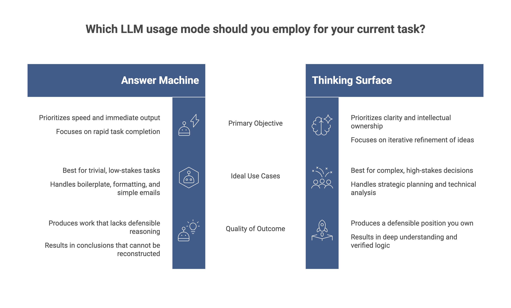
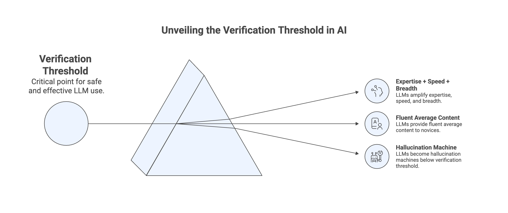

Two people use the same LLM to work through the same problem. One finishes in twenty minutes with an answer they do not fully understand and could not defend if pressed. The other finishes in two hours with a position they have stress-tested from four angles and could explain to a hostile audience. Same tool, opposite outcomes.
The difference is not prompt engineering. It is not model choice. It is not which system they paid for. It is whether they were using the LLM to think or to avoid thinking. That distinction is the single most important variable in how much value you actually extract from these systems, and almost nobody in the productivity discourse talks about it.
Two Modes Using The Same Tool
There are roughly two ways to use an LLM for any cognitive task. The first mode treats it as an answer machine. You have a question, you type the question, you take the answer, you move on. The output looks like work. You feel productive. You ship something.
The second mode treats it as a thinking surface. You have a vague intuition, you externalize it, you let the model push back, you refine, you push back on the refinement, and somewhere inside that loop you actually figure out what you think. The output of mode two also looks like work, but it carries something the first mode never produces: a defensible position you actually own.

The first mode is what most people do most of the time. It is also what every "ten ChatGPT tricks" tutorial optimizes for. There is nothing wrong with mode one for trivial tasks where speed is the entire point and the cost of being wrong is near zero. Drafting a polite decline email. Reformatting a CSV. Boilerplate that someone has to write but nobody has to think about.
The problem starts when mode one quietly leaks into work that should have been mode two. Strategic decisions, research syntheses, performance reviews, technical tradeoff analyses, anything where being wrong costs something real. These all feel faster in mode one because they are faster. They are also worse. The speed is paid for in conclusions you cannot defend and reasoning you cannot reconstruct.
The Pre-Thinking Problem
Vague prompts produce vague outputs. Everyone repeats this. Almost nobody acknowledges what it implies: the ceiling on what you can extract from an LLM is set by the quality of your thinking before you typed anything.
If you ask "help me think about X" with no priors about X, you will get a generic survey that confirms whatever you happened to absorb first about the topic. The model is not doing your thinking. It is filling in the shape of your ignorance with statistically average content drawn from its training distribution. You will feel like you learned something. You will have mostly learned the centroid of the internet's opinion about X, packaged in clear prose.
The fix is not a more sophisticated prompt template. It is having a position before you start. Write three sentences before opening the chat: what you currently believe, what you are genuinely uncertain about, and what evidence would change your mind. Now the model has something to engage with. Now disagreement is structurally possible. Now you will notice when the output drifts toward telling you what you already believed, because you wrote it down and can compare.
This step takes ninety seconds and gets skipped almost universally. It is also the single change that separates people who get useful work out of LLMs from people who get well-formatted noise.
Forcing The Yes-Man To Argue
I have written before about how LLMs are structurally incapable of meaningful disagreement. They are trained to be helpful, which in practice collapses into being agreeable. Drop a half-baked argument into any frontier model and it will find the steel-man for you. Drop the opposite argument an hour later and it will find a way that both are true.
This is fatal if you want validation. It is useful if you know how to redirect it.
The move is to never ask "what do you think of X." That prompt invites agreement and the model obliges. Instead ask "argue against X as hard as you can." Ask "what is the strongest case that this is wrong." Ask "what would someone who fundamentally disagrees with this premise say, in their own framing." The model will happily produce these because it is still being agreeable, just at a different level. It is agreeing to your meta-request. You have redirected the sycophancy from your conclusion to your process, and the sycophancy now works for you instead of against you.
Then run it on the counter-argument. Steel-man the counter to the counter. Three rounds of this and you have something that looks like an actual debate. The position you walk away with will be sturdier than anything you could have arrived at by asking "is my idea good," because at no point did you give the model the opportunity to tell you yes.
Iteration Is Where Thinking Happens
The cleanest tell that someone is using LLMs to avoid thinking is that they accept the first output. Maybe they tweak the wording. They do not restructure, challenge, or demand more. They treat what the machine gave them on the first try as both the floor and the ceiling of what was possible.
Thinking lives in the deltas. Between prompt one and prompt three you notice what you actually wanted. Between prompt three and prompt five you find the angle you could not see at the start. The output of the final prompt looks similar in form to the output of the first, but it carries the weight of everything you rejected to get there. That weight is what makes it yours and what makes it correct.
This is why the obsession with "one-shot" prompting is misguided. The goal is not to write a perfect prompt that produces a perfect output. The goal is to have a sequence of exchanges where each turn sharpens what you are actually asking. If you got it right on the first try, you were not thinking. You were retrieving something that already existed in roughly the form you needed it, and any sufficiently good search engine would have served you equally well.
The corollary is uncomfortable. If your LLM workflow produces good output in one shot, you are probably not working on hard problems. Hard problems require the iteration because the iteration is the work.
The Verification Threshold
Here is the thing nobody in the AI-productivity space wants to say out loud. You can only safely use an LLM in domains where you can verify the output. The further you are from being able to evaluate the answer, the more the LLM is functioning as a confidence amplifier rather than a thinking tool.
If I ask Claude about Bayesian inference, I can tell when it is wrong because I have the underlying model. If I ask it about a domain where I am a complete novice, I will believe whatever it says, including the parts that are subtly off in ways that will only matter later. The fluency makes errors invisible. There is no internal scaffold to flag the moment when plausible diverges from correct.
This puts a hard constraint on the cognitive amplification story. LLMs multiply what you bring. If you bring expertise, you get expertise plus speed plus breadth. If you bring nothing, you get fluent average content from the training distribution and no mechanism to distinguish it from anything better. People treating ChatGPT as an oracle in fields they do not understand are not thinking with AI. They are delegating their epistemics to a system whose confidence is calibrated to user satisfaction, not to truth.
The implication is sharper than the usual "AI makes mistakes, verify outputs" advice. There is a verification threshold below which LLMs make you worse at thinking, not better. Above it they are transformative. Below it they are a hallucination machine you cannot catch, and the harder you lean on them the more confident you become in things that are not true.

Externalize Structure, Not Conclusions
The most useful thing an LLM does in a thinking task is not generating content. It is generating structure you can react to.
Ask it for a decision framework and you will see whether the framework matches how the decision actually feels when you sit with it. Ask it to outline an argument and you will notice which sub-points feel hollow when written down in clean prose. Ask it to enumerate the tradeoffs in a technical choice and you will find the tradeoff you had been quietly ignoring because thinking about it was uncomfortable.
What you should not do is ask it for the conclusion. The conclusion is yours to reach. The LLM is competent at the scaffolding around thinking, the listing, the structuring, the surfacing of considerations you might have missed. It is mediocre at the actual judgment call, because it does not carry the consequences. You do.
This is the line between a tool that augments cognition and a tool that replaces it. Augmentation expands what you can hold in mind at once. Replacement removes the requirement to hold anything in mind at all. The first makes you smarter over time, because you build mental models from the externalized structure. The second makes you progressively dependent on outputs you can neither generate nor evaluate yourself.
The Mode Question
The framing of "how to use LLMs" needs to shift. Most current discussion treats these systems as productivity tools, faster outputs, more emails, quicker drafts. That framing is correct but trivial. The interesting question is whether they make us better thinkers or worse ones, and the answer is not the same for everyone using them. It depends on which mode is running.
The skill nobody teaches is recognizing which mode you are in mid-task, and switching when the task demands it. A useful tell: if you could not reconstruct your reasoning to a smart colleague who pushed back on it, you were in mode one. If you could, you were in mode two. There is no shame in mode one for the right kinds of work. There is real cost in using it for the wrong ones and not noticing.
The same LLM can make you sharper or duller. Same tool, opposite trajectories. The variable is you.
This work has been prepared in collaboration with a Generative AI language model (LLM), which contributed to drafting and refining portions of the text under the author's direction.